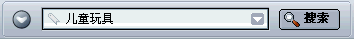
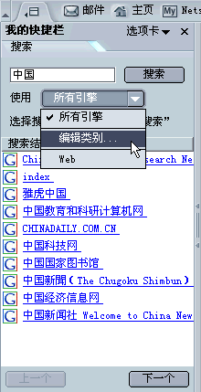

地址栏
欢迎使用 Netscape！ Netscape 最受欢迎的功能之一就是浏览互联网功能。浏览器是 Netscape 的一个组成部分，可用于访问网页，提供多种访问网页、搜索互联网的方法。
本节介绍浏览器以及如何用其进行浏览、搜索和保存网页。
|
本节内容包括： |
|
本节内容包括： |
启动 Netscape 时，即可看到“浏览器”，这就是您的浏览器。首次启动 Netscape 时，浏览器窗口会自动出现“最新动态”页面。
首次启动后，通常会在启动 Netscape 时看到您的主页。除非您自己选择主页，否则您的网络或互联网服务提供商会为您选择，或者即可看到 Netscape 的主页。
要选择您自己的主页，请参阅指定 Netscape 如何启动。
提示：
[ 返回到本节开始处 ]
通过键入 URL - 网页位置（地址）可以转到新页面。URL 通常由 http：// 开始，跟着是一个或多个标识地址的名称。例如，http://netscape.com
使用窗口右下角的锁定图标，可以在任何时间查看网页的安全情况。详情请参阅查看网页安全性。
提示：想快速选择“地址栏” 里的 URL，按下 Ctrl+L 键。
| |
| 地址栏
|
不了解 URL? 您可以键入 URL 的一部分，比如 cnn（代表 www.cnn.com）；或者键入普通词，如 gifts 或 flowers。浏览器可推断您要浏览的页面，或显示带有与您键入的词有关的链接选择的页面。
如果您对国际互联网还很陌生，请参阅网络初学者指南。
[ 返回到本节开始处 ]
大多数的网页都包含单击就可以转到其它页面的链接。
[ 返回到本节开始处 ]
有几种方式可重新访问页面：
 |
|||
| 后退 前进 | |||
| |
| 地址栏 |
提示：“我的快捷栏历史” 选项卡也可以用来选择在过去几次会话期间访问过的页面。详情请参阅添加我的快捷栏选项卡。
历史列表包含最近访问过的页面链接。“地址栏”列表包含您键入“地址栏”并访问了的页面链接。
要从 浏览器 访问历史列表，打开“转到”菜单，然后选择“历史”。要访问“地址栏”列表，单击在“地址栏”右下方的箭头。
提示：要想快速打开历史列表，按下 Ctrl+H 键。
如果不愿意“地址栏”或历史列表显示访问过的页面，可以彻底地或有选择行地清除历史列表和“地址栏”历史。
要删除“地址栏”或历史列表中的所有页面，请从“浏览器”窗口开始：
如果想从历史列表中选择性地删除页面，请按下列步骤：
提示：如果想给历史列表排序，单击一类别（“标题”、“位置”或“上次访问时间”）。如果想逆向排序请再次单击标题。
[ 返回到本节开始处 ]
如果一个页面过了很长时间还没出现，或者您改变了主意，不想再浏览了，可单击“停止”按钮。
要刷新当前页面或获取最新版本，请单击“重新载入”按钮，或按 Ctrl+Shift+R 键（Mac OS 上用 Cmd+Shift+R 键）。
|
|
|||
|
重新载入
|
停止
|
||
[ 返回到本节开始处 ]
网页的地址或 URL 可能会相当长，难以记忆。好在浏览网页不需要必须记住 URL。浏览器有一个书签列表，可用来指向您感兴趣的网页。
要进入已插入了书签的页面，请从“浏览器”窗口开始：
提示：如果想撤销步骤，单击“后退”箭头。
您可以保存自己的书签，以快速进入到经常访问或感兴趣的网站。详情请参阅创建新书签。
[ 返回到本节开始处 ]
当同时访问一个或多个网页时，可以使用“通过选项卡浏览”来更快更方便地浏览互联网。
“通过选项卡浏览” 可以在一个单一的“浏览器”窗口内打开若干选项卡，而每个选项卡显示一个网页。这样就不必为了浏览若干不同的网页而打开几个不同的窗口。这可节省桌面空间。可以在一个窗口内方便地打开、关闭、重新装载网页，不需切换到另外一个窗口。
当选项卡自动打开后，就可以轻松地管理导航选项卡。关于设置“通过选项卡浏览”个性设置的详情，请参阅浏览器个性设置 - 通过选项卡浏览。
有关使用“通过选项卡浏览”的更多信息，请参阅通过选项卡浏览。
[ 返回到本节开始处 ]
除了用浏览器在网上冲浪以外，您也可以通过使用“我的快捷栏”访问网页。
“我的快捷栏”是浏览器中的一个自定义框架，再那里可保存频繁使用的项目，如最近的新闻和天气预报、您的通讯录或“在线好友”、股票报价、日历，以及其他很多项目。这些项目显示在“我的快捷栏”选项卡中，并且不断更新。
Netscape 显示一些已经设置的“我的快捷栏”选项卡，但您可以通过添加、删除和重新排列选项卡来自定义“我的快捷栏”。详情请参阅我的快捷栏。
要查看“我的快捷栏”中的一项，单击其选项卡。

|
我的快捷栏缩放柄 |
如果尚未打开，单击“我的快捷栏”的缩放柄将其打开。如果没有缩放柄，打开浏览器中的“查看”菜单，选择“显示／隐藏”，然后再单击子目录里的“我的快捷栏”。 |
[ 返回到本节开始处 ]
|
本节内容包括： |
一共有三种快速搜索的方法：从“地址栏”、“我的快捷栏”和“网络搜索”页面。
搜索特定主题的网页很容易，只需在浏览器的地址栏内键入一个问题或只是一两个词，如下图所示。

例如，您要查找有关儿童玩具的信息：
执行搜索之后，结果保存在我的快捷栏的搜索选项卡内，直到进行一项新的搜索为止。您不必单击“后退”按钮来获得搜索结果。
“我的快捷栏”选项卡可使您快速搜索并把搜索结果加入书签。例如，如果您需要查找有关玩具汽车的信息：
备注：如果“我的快捷栏搜索”选项卡包含一个搜索引擎的列表以供选择，然后将搜索设置成了“高级”模式，而在单击“搜索”前需要选择一个或多个搜索引擎。可以以这种方式保留设置或改变“个性设置”中的基本设置。
提示：要快速显示搜索结果的下一页或当前页，单击在“我的快捷栏搜索”选项卡中的“前进”和“后退”按钮。
“网络搜索”页可以使您键入一个搜索项或词组，或打开几个感兴趣的类别（如艺术和娱乐、商业和其它类别）。要访问网络搜索页，按照下列步骤之一操作：
Netscape 可在一个网页中搜索您选定的词。
Netscape 打开一个新窗口，然后用缺省搜索引擎来搜索选定的词。有关如何改变用来搜索您选定的词的搜索引擎，请参阅 浏览器个性设置 - 互联网搜索。
[ 返回到本节开始处 ]
可以把“我的快捷栏搜索”选项卡设置为高级模式，它可以缩小搜索范围，或者选择一个或多个搜索引擎。

您可以为不同的搜索类别指定使用的搜索引擎。例如，您可以选择一套搜索引擎搜索旅游信息，另一套搜索引擎搜索软件信息。
[ 返回到本节开始处 ]
在缺省状态下，单击“搜索”时所使用的是 Netscape 搜索引擎。可以选择别的搜索引擎作为缺省引擎。您也可以指定在“我的快捷栏”上怎样显示搜索结果。
[ 返回到本节开始处 ]
若需在当前浏览器浏览的页面中查找文本：
要再次找到相同的词或词组：
[ 返回到本节开始处 ]
要搜索书签列表，从“浏览器”窗口开始。
提示：要想快速打开“书签”菜单，请按 Ctrl＋B 键。
要搜索历史列表：
要使用搜索结果：
提示：
[ 返回到本节开始处 ]
|
本节内容包括： |
要想从某个页面复制文本，请从“浏览器”窗口开始：
可将复制的文本粘贴到其它程序。
要从页面中复制链接（URL）或图像：
可以把链接粘贴到其它程序或浏览器的地址栏内。
[ 返回到本节开始处 ]
要保存整个页面，从“浏览器”窗口开始：
浏览包含框架的页面且该页面被选中的时候，在下拉列表中，除了“另存页面为”以外，还有一个“另存框架为”选项。这将使您能仅保存位于选定框架内的页面。
将文件保存到硬盘可使您在脱机时也能浏览该页（或其 HTML 源代码）。
要保存页面上的图像：
若需在不显示页面的情况下进行保存（这在检索一个非格式化的不用于查看的页面（如数据文件）时非常有用）：
要点：一些链接在单击之后，可自动下载并保存文件到您的硬盘。这些链接的 URL 通常以“ftp”开始或以“au”或“mpeg”等文件类型扩展名结尾。这些链接可以传送软件、声音或电影文件，并可启动支持该文件的帮助器应用程序。
提示：要把一个图像设置成 Windows 的桌面壁纸，右击图像然后从弹出菜单中选择“设置为壁纸”。
[ 返回到本节开始处 ]
要打印当前页面，请从“浏览器”窗口开始：
要打印选择的文本，请从“浏览器”窗口开始：
打印页面的大小，而不是屏幕窗口的大小，决定着打印页面上的内容布置。为了适合打印纸的大小，文字将自动换行，并且图像将重新定位。
要想在打印前观看页面的打印效果，可使用打印预览。请从“浏览器”窗口开始：
从“浏览器”窗口打开“文件”菜单，然后选择“打印预览”。
在“打印预览”中，可对要打印的页面做如下操作：
 、“上一页” 按钮
、“上一页” 按钮  、“第一页” 按钮
、“第一页” 按钮  或“最后一页” 按钮
或“最后一页” 按钮 来在页面之间移动。
来在页面之间移动。备注：有些“打印预览”功能在 Mac OS 和 Linux 上不同或不可用。
备注：有些“页面设置”功能在 Mac OS 和 Linux 上不同或不可用。
要自定义在 Netscape 中的页面打印，可以使用“页面设置”：
从“浏览器”打开“文件”菜单，然后选择“页面设置”。
在“页面设置”中，可以改变要打印页面的下列设置：
提示：要在页面设置改变后的预览页面，使用打印预览。
[ 返回到本节开始处 ]
|
本节内容包括： |
如果用一种以上的语言浏览、编写或收发电子邮件，您需要选择适当的字符编码和字体。
字符编码是一种转换方法，它可将文档或邮件转换为能被您的计算机使用的数据。所有的互联网文档和邮件以及新闻邮件都使用某一种字符编码方法（也叫字符集）。
文档的字符编码方法取决于其所用语言。有些语言（比如大多数西方语言）有共同的编码方法。其它如中文、日文和俄文，使用不同的方法。
您的 Netscape 版本把缺省字符编码设置为适合您所在地区的编码。然而，如果使用一种以上的语言，用户可能需要选择适当的字符编码方法，并指定用于编码方法的字体。
要选择字符编码，从“浏览器”窗口开始：
选中的字符编码方法将添加到“字符编码”菜单。如果选中了一种以上的编码方法，正在使用的编码旁边有一个项目符号（点）。
Netscape 可检测出文档使用了哪种字符编码，并可把字正确的显示在屏幕上。要充分利用这个能力，从“浏览器”窗口开始：
若需改变在用的字符集列表：
要改变语言组中的缺省字体：
许多网页作者选择自己的字体和字体大小。您可通过设置“允许文档使用其它字体”来使用作者的字体设置。
要调整字体的可读性，从“点每英寸”（dpi）下拉列表中选择适合的分辨率显示网页。选择“其它”打开“校准分辨率”对话框，它可以通过测量屏幕上行的长度来校准分辨率。
[ 返回到本节开始处 ]
您在 Netscape 中使用的语言可影响按钮、对话框、菜单、工具和其它项目的文字。这些项目的功能保持不变。
要设置您的首选语言：
备注：在改变了首选语言后，必须重新启动 Netscape。
使用的内容包对主页、书签、工具栏内容、我的快捷栏和其它项目有影响。
要使用内容包：
备注：改变内容包后必须重新启动 Netscape。
提示：要下载更多语言包或内容包，单击“下载其他”。
网页有时提供几种语言版本。Netscape 尽可能用您首选的语言显示页面。您可以指定浏览时显示语言的顺序。
要设置语言个性设置：
备注：列表中每种语言的旁边括号中提供该语言的双字母代码。它们是各种语言的标准缩写。完整列表请参阅线上文档语言名称表示代码。
[ 返回到本节开始处 ]
有关多语种 Netscape 方面的信息，请见线上文档国际用户页面。
[ 返回到本节开始处 ]
|
本节内容包括： |
浏览器可处理多种类型的文件。但是对有些文件来说，比如电影或音乐， Netscape 则需要能够处理这些文件的插件或者“帮助器”应用程序。如果 Netscape 没有所需的帮助器应用程序或者插件，它仍可以将这些文件保存到硬盘中。保存文件时，可以用“下载管理器”记录其踪迹。
插件是扩大浏览器功能、在 Netscape 内部运行的帮助器应用程序。Netscape 程序可通过 Sun Java、Macromedia Flash 和 RealNetworks RealPlayer 等插件运行多媒体文件和小应用程序，比如电影、动画和游戏。
在安装 Netscape 时，就可以选择添加这些最流行的插件中的一部分。因此不用分别对它们进行安装。尽管如此，在安装了 Netscape 之后，仍然可以安装插件。若想查看 Netscape 当前安装了那些插件，请参阅线上网页 Netscape 插件管理器。
关于可以安装的插件完整清单，请参阅 Netscape 的浏览器插件页面。
当文件不能在 Netscape 中使用时，可以选择启动帮助器应用程序在 Netscape 之外打开这些文件。例如，要运行 MP3 文件，Winamp 这样的程序就可以在 Netscape 外面打开。
浏览器可根据帮助器应用程序个性设置面板中的设置，确定使用哪种帮助器应用程序。这些个性设置已经预先配置妥当，通常无需改变。另外，如果浏览器不知道使用哪种帮助器应用程序，它会允许您在“下载”对话框内查找帮助器应用程序。
“下载”对话框有下列选项：
提示：可以清除个性设置中保存的“打开此类文件之前始终询问”选项。更多信息请参阅浏览器个性设置 - 帮助器应用程序。
对于要精细调整帮助器应用程序个性设置的有经验用户：
要指定浏览器应如何处理下载的文件：
要从列表中删除一项：
关于帮助器应用程序个性设置的更多信息，请参阅浏览器个性设置 - 帮助器应用程序。
可以用“下载管理器”来记录下载文件的踪迹。下载管理器显示以下信息：
要打开“下载管理器”，遵循以下步骤：
“下载管理器”中有如下的菜单选项：
[ 返回到本节开始处 ]
备注：本节讨论仅针对 Windows 的设置和功能。
Netscape 以其网页显示闻名，包括在互联网上的和在您的电脑上。要便捷地打开网页，应把 Netscape 设置成缺省浏览器。
把 Netscape 设置成缺省浏览器使得它能够自动打开互联网上使用的一般文件格式和协议。一般互联网文件和协议包括：
安装完成后，Netscape 检查其是否是一般互联网文件或协议的缺省浏览器。如果不是，它就会询问：“Netscape 当前未被设为缺省浏览器， 是否将其设为缺省浏览器？”
单击“是”即可把 Netscpape 设为缺省浏览器。如果单击“否”，每次 Netscape 启动时都会被问到这个问题，除非取消对“下次启动时还进行检查”复选框的选取。
如果取消对“下次启动时还进行检查”复选框的选取，仍可以通过改变个性设置中的设置把 Netscape 设为缺省浏览器。有关如何通过 Netscape 个性设置把 Netscape 设为缺省浏览器，请参阅浏览器个性设置 - 浏览器。
可以手工自定义 Netscape 如何处理不同格式和协议。详情请参阅高级个性设置 - 系统。
[ 返回到本节开始处 ]
浏览网页时，自动加载（启动）有助于解释网页的几项功能。这些功能，Java 和 JavaScript，可以让网页更加生动，但是下载时间会更长。
关于如何关闭 Java，请参阅高级个性设置 - 高级。
关于如何关闭 JavaScript ，请参阅 高级个性设置 - 脚本和 Windows。
[ 返回到本节开始处 ]
计算机把经常访问页面的副本保存到内存高速缓存或磁盘高速缓存中。这样计算机就可以不必在每次浏览时都从网络上检索页面了。
要设置内存高速缓存的大小或清除之（仅适用于 Windows 和 Unix 系统）：
要点：较大的高速缓存可以快速地检索更多的数据。但是，这要求您的计算机上有很多的额外内存。1024K 足矣。
要设置磁盘高速缓存的大小或清除之：
要点：大一些的磁盘高速缓存可以快速检索更多的页面,但会占用更多的硬盘空间。
当退出 Netscape 时，它会进行高速缓存维护。如果维护时间太长，试着减小磁盘高速缓存的大小。
要指定浏览器多长时间检查网络上的页面更新（不会使高速缓存中的页面过期）：
如果应位于高速缓存中的页面显示慢于正常速度，确保个性设置没有设置为“每次查看页面时”，因为验证需要花费时间连接网络。
要随时刷新页面：
[ 返回到本节开始处 ]
Netscape 可以在有软件更新版本时通知您，并自动安装更新版本。当 Netscape 有新版本时，Netscape 也会通知您。
有关设置自动软件安装的详细信息，请参阅高级个性设置 - 软件安装。
[ 返回到本节开始处 ]
如果您的鼠标有鼠标滚轮，就可以控制鼠标滚轮在 Netscape 中的功能。
有关如何设置鼠标滚轮，请参阅高级个性设置 - 鼠标滚轮。
[ 返回到本节开始处 ]
备注：“快速启动”只在 Netscape 的 Windows 版本中可用。
快速启动可缩短 Netscape 启动的时间。当 Netscape 使用快速启动时，Netscape 标志显示在任务栏内（靠近时间）。
| |
| Netscape 快速启动图标
|
提示：要快速启动部件（比如“编写器”窗口、“邮件和新闻组”窗口和“通讯录”窗口），右击 Netscape 徽标图标，然后在弹出菜单中选择部件。
安装 Netscape 时，您可以选择启用或禁用快速启动功能。如果启用了快速启动，当 Windows 首先启动（以及每次 Netscape 首先启动）时，“快速启动”功能将把 Netscape 的一部分载入内存。“快速启动”使得 Netscape 能够在关闭了所有的 Netscape 窗口后仍然驻留在内存中。这让 Netscape 能在您需要时快速启动，而不需载入全部的 Netscape。如果您的计算机内存不大，可以禁用“快速启动”以节省内存。
要在 Netscape 中启用或禁用快速启动：
提示：一种便捷地禁用“快速启动”的方法是：右击 Netscape 在系统通知区域（靠近时间显示）的徽标图标然后选择弹出菜单中的“禁用快速启动”。
[ 返回到本节开始处 ]
|
本节内容包括： |
本节解释如何使用代理服务器。
许多机构阻止在互联网上对其网络进行访问。这可防止了外部人员访问敏感信息。这种保护叫做防火墙。
如果您所在的机构设有防火墙，浏览器在连接到互联网之前，可能需要通过一个代理服务器。代理服务器可防止外部人员闯入您所在机构的专用网络。
准备工作：
若需设置浏览器，以使其能使用代理服务器，请按下列步骤操作：
域名是 URL 的一部分，其中包含了机构、企业或学校的名称，例如 netscape.com 或 washington.org。如果使用不带域名的本地主机名，请以同样的方式列出。使用逗号分隔多个主机名。不能使用通配符。
有关使用代理服务器个性设置面板方面的详细说明，请参阅高级个性设置 - 代理服务器。
[ 返回到本节开始处 ]
2002 年 6 月 20 日
© 1994-2002 年 Netscape Communications Corporation 版权所有。